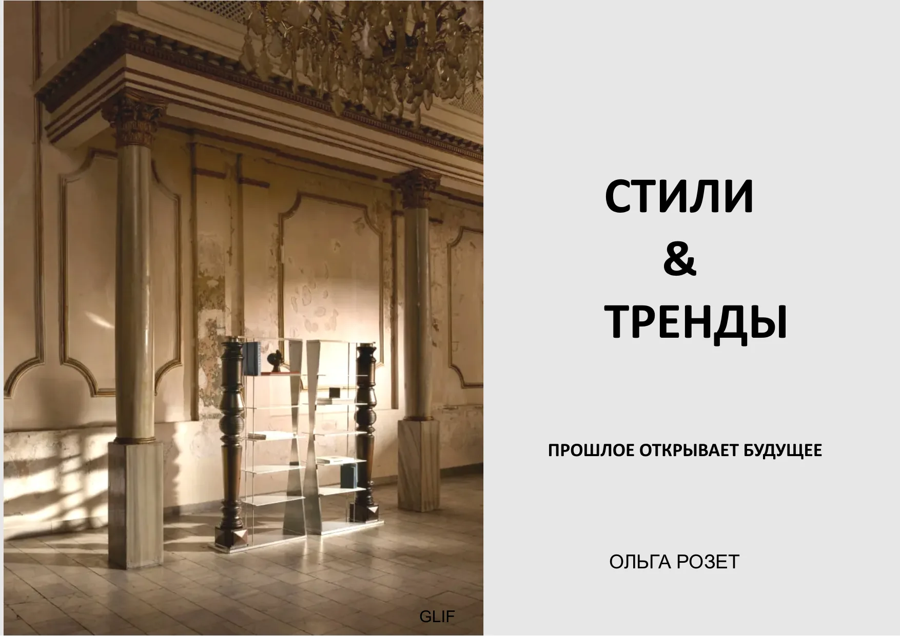
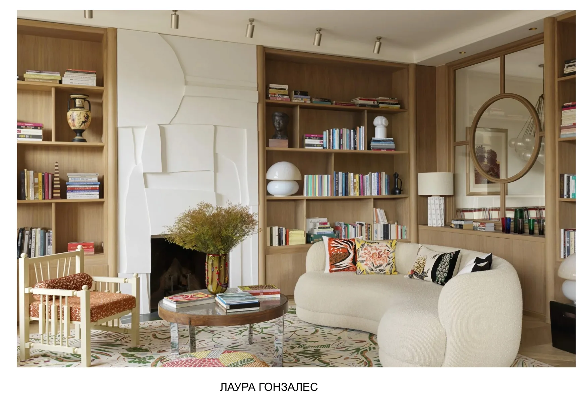
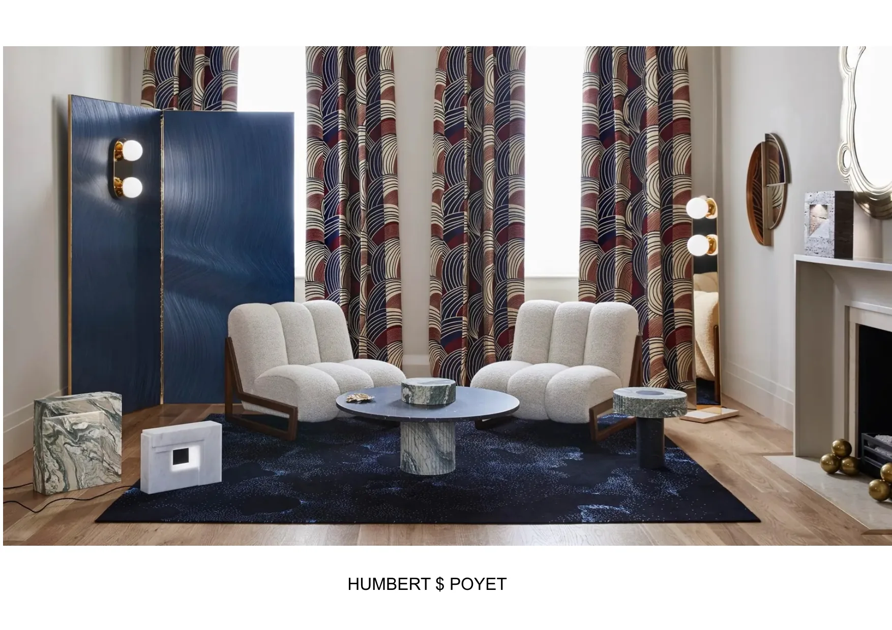
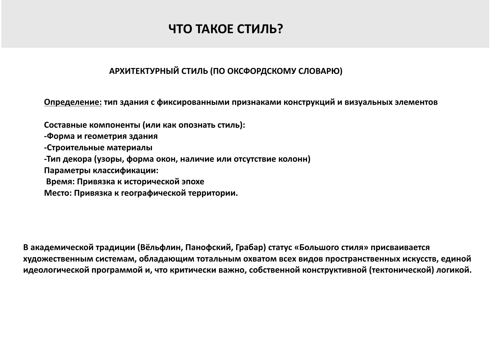
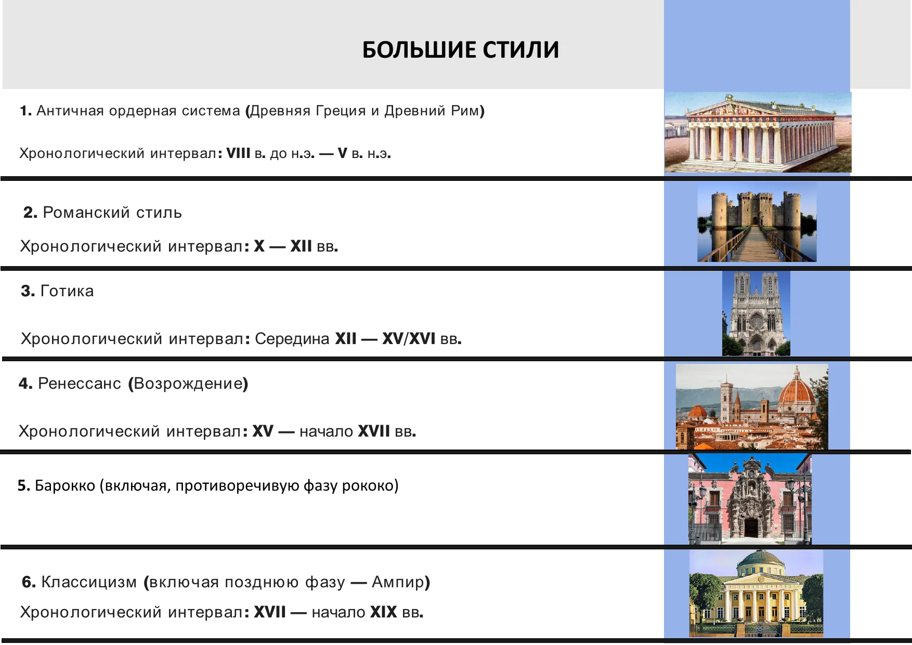
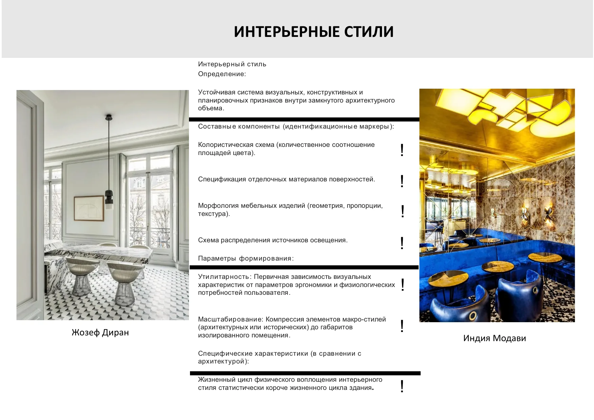
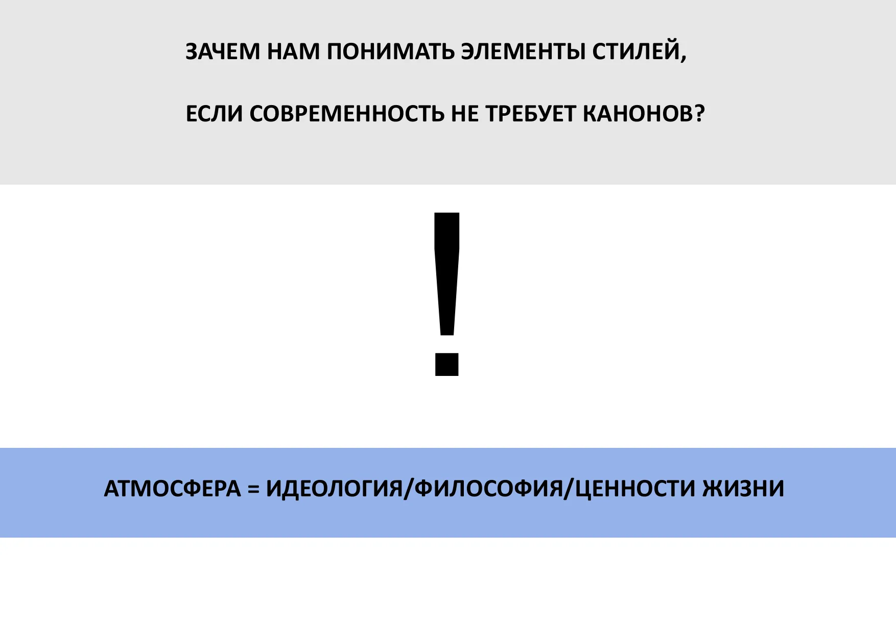
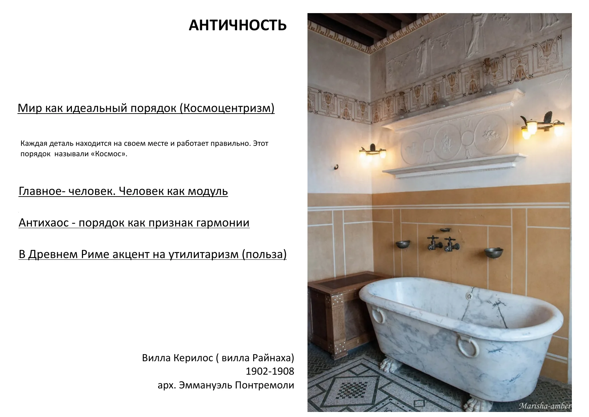
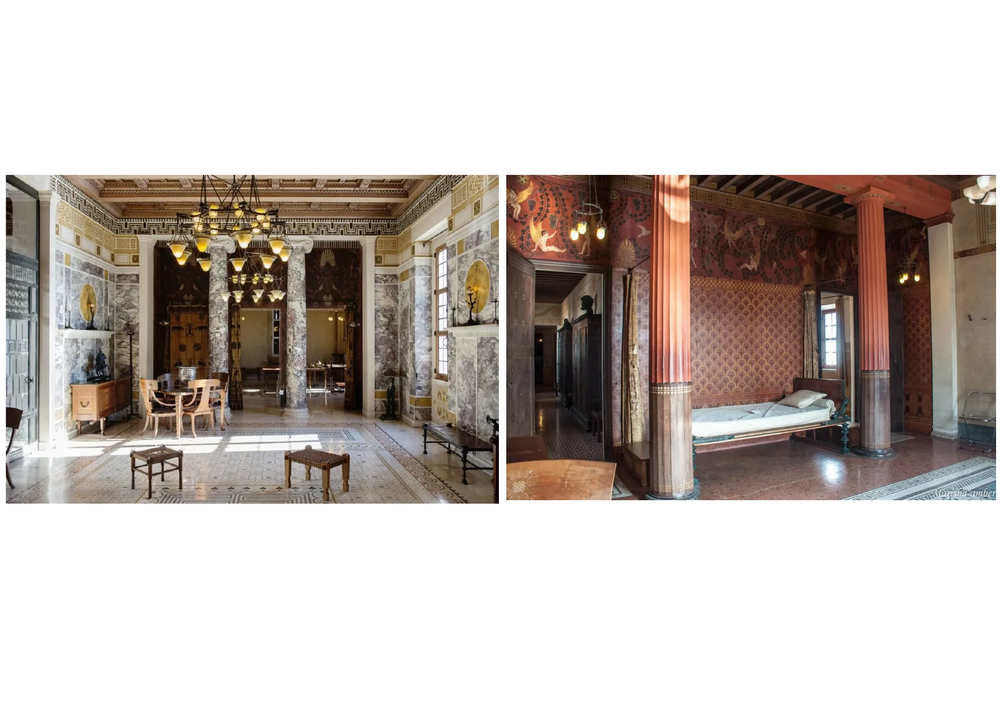
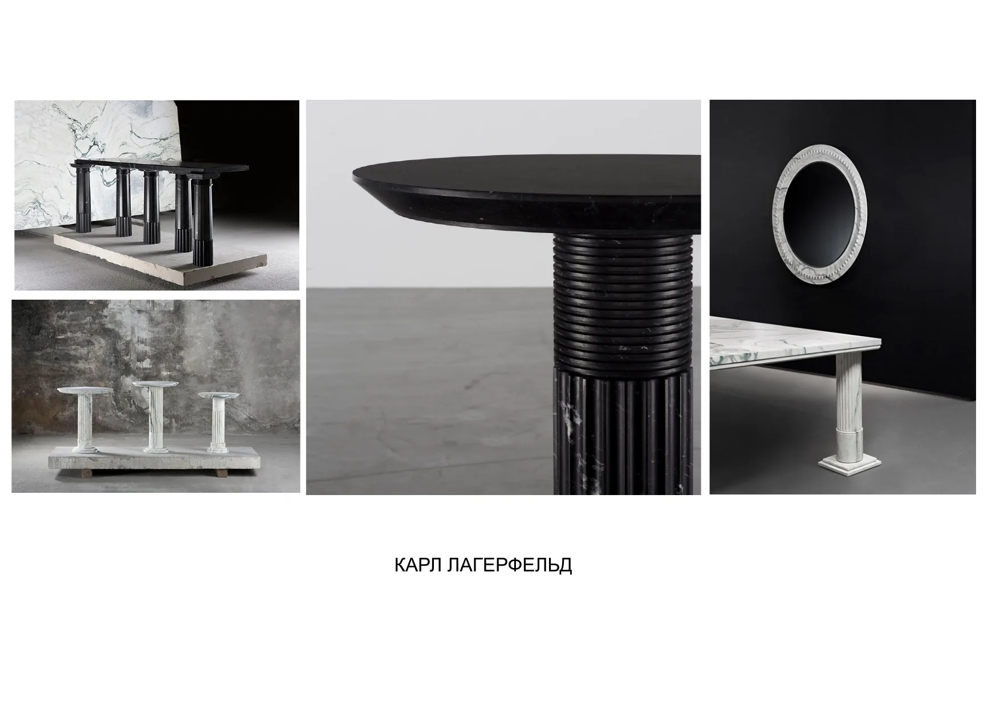

Рассказ-показ
Часть первая · Стили · Прошлое открывает будущее
СТИЛИ
И ТРЕНДЫ
Зачем понимать стили,
если современность
не требует канонов?
- Формат — каждый лист лекции разобран прозой, с фотографиями и словами автора; читается с телефона.
- Время — около часа на чтение и еще полчаса на практику.
- После — вы читаете незнакомый интерьер по семи осям и называете его философию одной фразой: с нее начинается бриф.
«АТМОСФЕРА = ИДЕОЛОГИЯ/ФИЛОСОФИЯ/ЦЕННОСТИ ЖИЗНИ»
- 7 стилей
- 7 осей анализа
- 19 понятий
- упражнение · 11 проверок
Запись — 1:21:24
Глава 1 · 00:00–08:30 Камертон
«»
Два интерьера, с которых лекция начинается без объяснений: библиотека Laura Gonzalez и салон Humbert & Poyet. К ним страница возвращается в самопроверке — прочитать по осям, когда оси уже в руках.
00:11 — 08:30


Титул
Прошлое открывает будущееКолонный зал с современным стеллажом
«»
00:11 — 02:12


Камертон · библиотека
Laura GonzalezБиблиотека: белый скульптурный камин и округлый белый диван
«»
02:12 — 05:36


Камертон · салон
Humbert & PoyetСиняя ширма, шторы с паттерном, белые кресла, мрамор
«»
05:36 — 08:30
Глава 2 · 08:30–23:27 Понятия
«»
Зачем понимать элементы стилей, если современность не требует канонов?
Ответ листа 7 — атмосфера. Стиль здесь не набор визуальных признаков, которым учат на курсах истории дизайна, а идеология, философия и ценности жизни, воплощенные в пространстве. Дальше каждая глава берёт одну эпоху и спрашивает, во что она верила и как это видно в интерьере сегодня.
08:30 — 23:27


Понятия · определение
Что такое стиль«»
08:30 — 13:49


Понятия · шесть систем
Большие стили«»
13:49 — 17:10


Понятия · маркеры
Интерьерные стили«»
17:10 — 22:40


Понятия · ключ лекции
Атмосфера«АТМОСФЕРА = ИДЕОЛОГИЯ/ФИЛОСОФИЯ/ЦЕННОСТИ ЖИЗНИ»
22:40 — 23:27
Глава 3 · 23:27–35:41 Античность
«»
Во что верила античность: мир как идеальный порядок, где всё на своем месте, а мера всему — человек.
Космос против хаоса; у Рима к порядку добавляется польза. Сегодня этот порядок читается у Emmanuel Pontremoli на Villa Kérylos и у Karl Lagerfeld, который делает из ордера мебель.
23:27 — 35:42


Античность · философия
Мир как порядок«»
23:27 — 27:49


Античность · Emmanuel Pontremoli, 1902–1908
Villa KérylosКолонный зал с мозаикой и меандром; спальня с красными колоннами и росписью
«»
27:49 — 33:52


Античность · носитель
Колонны Karl LagerfeldМебель-колонны: черные столы-ордеры, белые мраморные табуреты, зеркало, консоль
«»
33:52 — 35:42
Шпаргалка стиля
Античность
- «»
- «»
- «»
Пауза · вопрос Системы, не слова автора
Остановитесь на минуту
Какой признак в интерьере вы назовете первым, чтобы показать порядок, в котором у каждой детали свое место?
Показать ответ
«»
Словарь
Понятия
Термины лекции в порядке появления. Каждое понятие ведет к единицам, где оно работает.
- Стиль
Тип здания или интерьера с устойчивыми признаками конструкции и облика. Опознается по форме и геометрии, материалам и типу декора; классифицируется по времени и месту.
- Большой стиль
Художественная система, охватившая все пространственные искусства, с единой идеологией и собственной тектонической логикой. Их шесть: античный ордер, романский, готика, ренессанс, барокко, классицизм с ампиром.
- Интерьерный стиль
Устойчивая система признаков внутри замкнутого объема: колористическая схема, материалы поверхностей, морфология мебели, схема света. Рождается утилитарностью и сжатием большого стиля до комнаты; живет короче здания.
- Атмосфера
То, ради чего нужны стили без канонов: идеология, философия и ценности жизни, воплощенные в пространстве. Ключ всей лекции.
- Космоцентризм
Античная картина мира: мир как идеальный порядок, где каждая деталь на своем месте. Порядок — признак гармонии, его противник — хаос.
- Человек как модуль
Мера античного порядка — человек: из его пропорций выводится ордер, а у Рима к порядку добавляется польза.
- Теоцентризм
Романская картина мира: Бог в центре как единственный свет; храм — убежище с толстыми стенами и окнами-бойницами, внутри тишина и порядок, снаружи шум и опасность.
- Храм как убежище
- Эсхатология
Ожидание конца света: без горизонта планирования в жилище нет ничего лишнего — отсюда аскетизм романского интерьера.
- Храм как убежище
- Ваби-саби
Эстетика тишины, несовершенства и пустоты. У Axel Vervoordt в Hidden Hills — келья монаха, переосмысленная для XXI века: вместо золота и хрусталя тишина и свет.
- Hidden Hills House
- Схоластика
Готическая мысль: Бог как высшая математика. Здание прозрачно, его структура видна от крупного к мелкому.
- Метафизика света
- Lux Nova
«Новый свет»: солнечный свет, прошедший через витраж, становится божественным. Здание как стеклянный фонарь, показывающий, как устроен рай.
- Метафизика света
- Человек — мера
«Человек — мера всех вещей»: Витрувианский человек Леонардо. Сегодня это называют эргономикой.
- Человек как мера
- Золотое сечение
Математика красоты — пропорция, которой Ренессанс измерял гармонию.
- Человек как мера
- Круг и купол
Идеальная форма: центральная симметрия, все точки равноудалены от центра. Стоящий под куполом становится осью координат — вместо долгого пути к алтарю в длинном средневековом храме.
- Человек как мера
- Театрализация
Интерьер как инструмент впечатления и статуса: динамика и иллюзия вместо статичного порядка, никаких прямых линий. Рекламная кампания эпохи.
- Театр статуса
- Рационализм
Просвещение: факты и логика. Мир — не театр, а идеально работающие часы; симметрия — закон.
- Мир как часы
- Old Money
Нынешнее прочтение классицизма: контроль, стабильность, богатство, традиция. Выбор тех, кто показывает гражданский долг.
- Мир как часы
- Ампир
Стиль победителей: интерьер как шатер генерала — полоска, орлы, мечи, щиты, золото и лавровые венки; примат власти.
- Мир как часы
- Контекстуальный модернизм
Современный интерьер без канона: читает контекст места и складывает его слои — балки, замша, сталь и латунь в Cour des Vosges.
- Номер
Инструмент
Оси анализа
Те же семь осей, которыми разбираются тренды, — здесь применены к стилям. Прошлое читается той же оптикой, что настоящее: у каждой единицы указано, какими осями она читается.
- Формообразование
Морфология
Чем держится форма: какой модуль, какая геометрия, где ось.
- Античность — ордер и симметрия; колонна как модуль, мера всему — человек.
- Романский — толстая стена, узкий проем, замкнутый объём: дом-крепость.
- Готика — каркас и вертикаль, ребра от крупного к мелкому; стена уходит в стекло.
- Ренессанс — круг и купол, золотое сечение, безупречный баланс.
- Барокко — отказ от статики: кривая, спираль, сдвиг масштаба.
- Классицизм и ампир — ось и симметрия как закон; ордер, очищенный до гладкой колонны.
- Контекстуальный модернизм — объём, подчиненный функции и эргономике XX века.
- Laura Gonzalez
- Что такое стиль
- Интерьерные стили
- Мир как порядок
- Villa Kérylos
- Колонны Karl Lagerfeld
- Oculus
- Интерьер Edith Farnsworth House
- Человек как мера
- Apple Dubai Mall
- Apple Park
- Ресторан Joseph Dirand
- Vincent Van Duysen
- Магазин Aesop
- Театр статуса
- Бальный зал
- Мир как часы
- Thomas Pheasant
- Анфилада Jean-Louis Deniot
- Гостиная
- Романский стиль
- Цвета
Интенсивность, температура, характер
Чем эпоха красит и что цвет обещает.
- Античность — охра и золото по камню; храмы были цветными, белыми их сделало время.
- Романский — цвет самого материала: известь, камень, некрашеное дерево.
- Готика — цвет, рожденный светом: витраж превращает солнце в божественный свет.
- Ренессанс — разработанная палитра мастеров-колористов; контраст ради ясности.
- Барокко — много цвета и сталкивающиеся паттерны: полоса, золото, глубокая синева.
- Классицизм и ампир — сдержанная глубина; шахматный черно-белый пол, золото по серому.
- Контекстуальный модернизм — приглушенная база, цвет точкой: розовая штора, синяя ниша.
- Laura Gonzalez
- Humbert & Poyet
- Интерьерные стили
- Замок Гравенвезел
- Hidden Hills House
- Ресторан Joseph Dirand
- Studio Peregalli
- Vincent Van Duysen
- Бассейн
- Золотая гостиная
- Столовая-библиотека
- Спальня Империи
- Гостиная
- Спальня
- Античность
- Орнаменты
Узор как осмысленный выбор
Что узор говорит, когда его читают, а не разглядывают.
- Античность — меандр и мозаика: орнамент читается как текст.
- Романский — орнамента почти нет: лишнего не держат, когда ждут конца.
- Готика — орнамент и есть конструкция: ребра, розы, математика каркаса.
- Ренессанс — узор подчинен геометрии: кессон, мера, повтор.
- Барокко — избыток как прием: растительная вязь, иллюзорная роспись, театр.
- Классицизм и ампир — канон и атрибут: лавр, венок, эмблема победителя.
- Контекстуальный модернизм — орнамент снят; его работу берёт на себя фактура.
- Humbert & Poyet
- Что такое стиль
- Villa Kérylos
- Ресторан Joseph Dirand
- Studio Peregalli
- Магазин Aesop
- Дерево Luca Guadagnino
- Бассейн
- Бальный зал
- Thomas Pheasant
- Анфилада Jean-Louis Deniot
- Золотая гостиная
- Столовая-библиотека
- Спальня Империи
- Текстуры
Тактильность и столкновение фактур
Что чувствует рука и что фактура рассказывает о времени.
- Античность — полированный мрамор против росписи; объём рядом с плоскостью.
- Романский — некрашеная стена, ткань с бытованием, патина: у Axel Vervoordt это принцип.
- Готика — холод камня против прозрачности стекла.
- Ренессанс — гладкость и ясность поверхности; контраст держат цветом, не рельефом.
- Барокко — блеск: позолота, шелк, зеркало, глянец мрамора.
- Классицизм и ампир — полировка, буазери, плотный текстиль; у Ralph Lauren — теплая камерность.
- Контекстуальный модернизм — фактура вместо декора: шероховатая штукатурка, след инструмента, лён.
- Замок Гравенвезел
- Проем и камень
- Дерево Luca Guadagnino
- Бассейн
- Спальня Империи
- Номер
- Материалы
Честность сырья без имитаций
Из чего сделано — и что материал обещает заказчику.
- Античность — мрамор: достоинство, статус, долговечность.
- Романский — камень, известь, дерево: то, что под рукой и переживет хозяина.
- Готика — стекло и камень: материал, работающий светом.
- Ренессанс — камень, дерево, штукатурка, названные ясно.
- Барокко — зеркало, золото, цветной мрамор, хрусталь.
- Классицизм и ампир — красное дерево, бронза, буазери с позолотой.
- Контекстуальный модернизм — честное сырье без имитаций; доступность материала — часть темы.
- Laura Gonzalez
- Humbert & Poyet
- Что такое стиль
- Интерьерные стили
- Villa Kérylos
- Колонны Karl Lagerfeld
- Храм как убежище
- Замок Гравенвезел
- Проем и камень
- Hidden Hills House
- Метафизика света
- Интерьер Edith Farnsworth House
- Дом в лесу
- Apple Dubai Mall
- Магазин Aesop
- Дерево Luca Guadagnino
- Thomas Pheasant
- Золотая гостиная
- Номер
- Античность
- Технологии
Чем построено и что умеет эпоха
Что появилось в доме, чего раньше не было, — и что это переменило в самом интерьере.
- Античность — ордерная система и римская инженерия; польза предмета как требование.
- Романский — свод и толстая стена; техника спрятана, свет остается единственным прибором.
- Готика — каркас, позволивший стене стать стеклом.
- Ренессанс — число как инструмент: золотое сечение и модуль; XX век ответит модулором Le Corbusier.
- Барокко — иллюзия: роспись, отражение, поставленный свет.
- Классицизм и ампир — порядок как механизм: интерьер должен работать как часы.
- Контекстуальный модернизм — эргономика, климат и свет спрятаны; виден только результат.
- Интерьерные стили
- Метафизика света
- Oculus
- Edith Farnsworth House в лазерах
- Apple Dubai Mall
- Философия времени
Идеология и философия времени и места
С чего начинается каждая глава: во что эпоха верила.
- Античность — мир как идеальный порядок; антихаос, человек как мера.
- Романский — Бог в центре и ожидание конца; дом как убежище.
- Готика — схоластика: Бог как высшая математика, свет как Его тень.
- Ренессанс — человек как мера всех вещей; гармония круга.
- Барокко — ошеломить и утвердить статус; мир как театр.
- Классицизм и ампир — разум и порядок; мир как идеально работающие часы.
- Контекстуальный модернизм — контекст места; одна историческая вкладка как послание.
- Прошлое открывает будущее
- Большие стили
- Атмосфера
- Мир как порядок
- Храм как убежище
- Hidden Hills House
- Метафизика света
- Edith Farnsworth House в лазерах
- Дом в лесу
- Человек как мера
- Apple Park
- Театр статуса
- Мир как часы
- Столовая-библиотека
- Номер
- Спальня
- Античность
- Романский стиль
- Готика
- Ренессанс
- Барокко
- Классицизм и ампир
- Контекстуальный модернизм